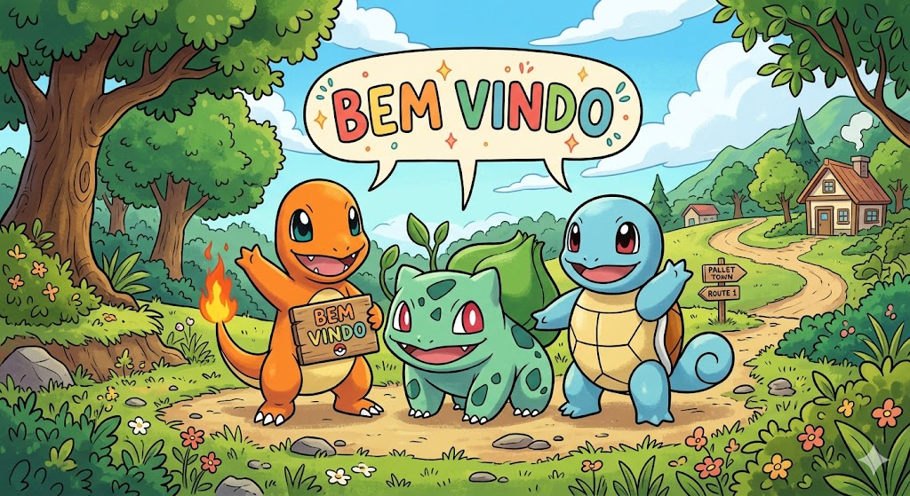
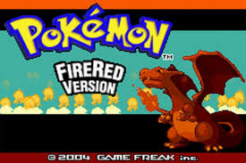

Este site foi desenvolvido com o objetivo de apresentar informações sobre o universo de Pokémon Fire Red, um dos jogos mais clássicos da franquia Pokémon. Aqui você encontrará conteúdos organizados de forma simples e acessível, ideais tanto para iniciantes quanto para fãs do jogo.
Ao longo do site, você poderá conhecer melhor os pokémons iniciais, os líderes de ginásio, a região de Kanto, além de itens importantes e pokémons lendários que fazem parte da jornada. Também estão disponíveis dicas e informações úteis para ajudar no progresso dentro do jogo.
Explore as páginas através do menu de navegação e descubra tudo o que você precisa para se tornar um grande treinador Pokémon.
Prepare-se para iniciar sua aventura e enfrentar desafios até alcançar o título de Mestre Pokémon!

Pokémon Fire Red é um remake do clássico Pokémon Red, lançado para Game Boy Advance. O jogo se passa na região de Kanto, onde o jogador inicia sua jornada como um treinador Pokémon em busca de se tornar o campeão da Liga Pokémon.
Durante a aventura, é necessário capturar pokémons, enfrentar treinadores, derrotar líderes de ginásio e impedir os planos da organização criminosa Team Rocket.

O principal objetivo do jogo é completar a Pokédex e derrotar a Elite dos Quatro, tornando-se o Campeão da Liga Pokémon. Para isso, o jogador deve explorar diversas cidades, coletar insígnias e fortalecer sua equipe ao longo da jornada.
Cada decisão durante o jogo, como a escolha do pokémon inicial e os caminhos explorados, influencia diretamente na experiência do jogador.
Um dos maiores desafios de Pokémon Fire Red é enfrentar a Elite dos Quatro, composta por treinadores extremamente fortes. Para vencer, é necessário montar uma equipe equilibrada e estratégica, explorando as fraquezas dos diferentes tipos de pokémons.
Além disso, pokémons lendários como Mewtwo representam desafios extras para jogadores que desejam completar o jogo de forma mais avançada.